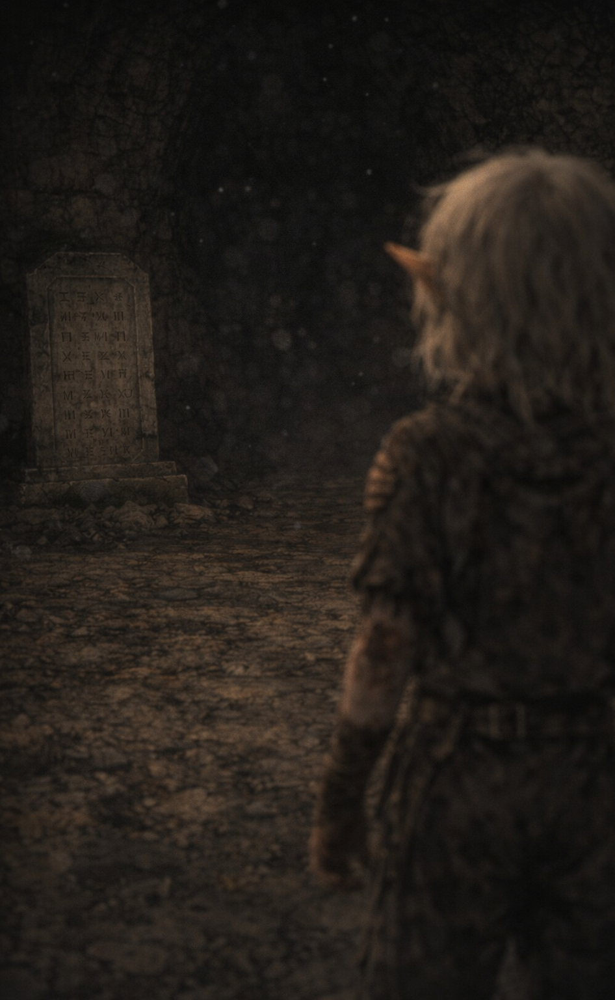
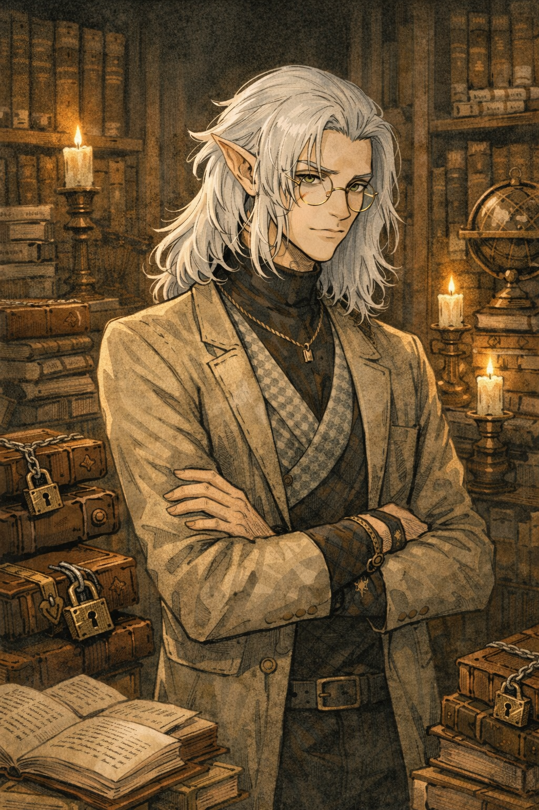
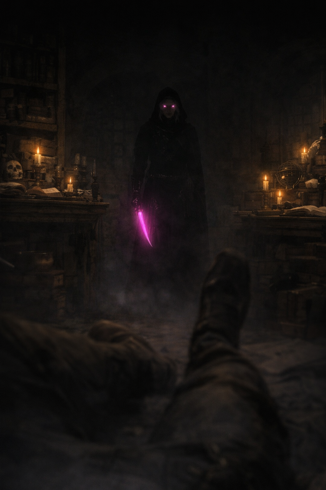
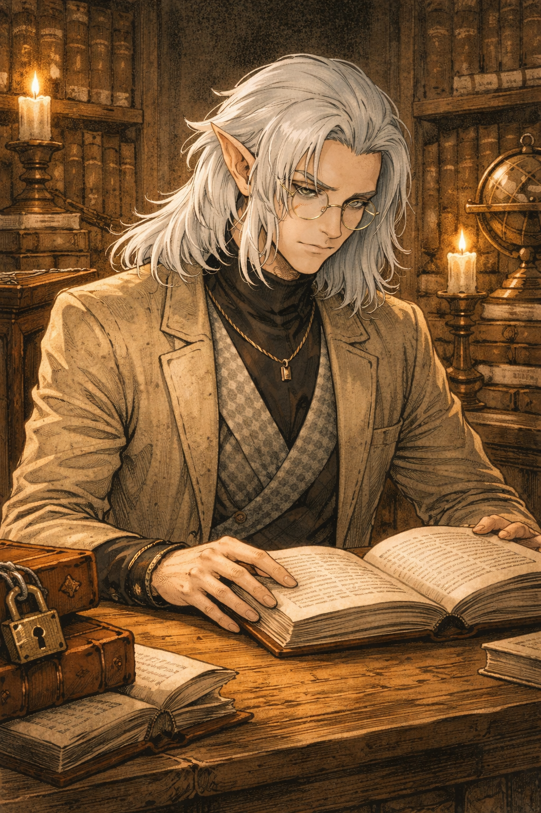
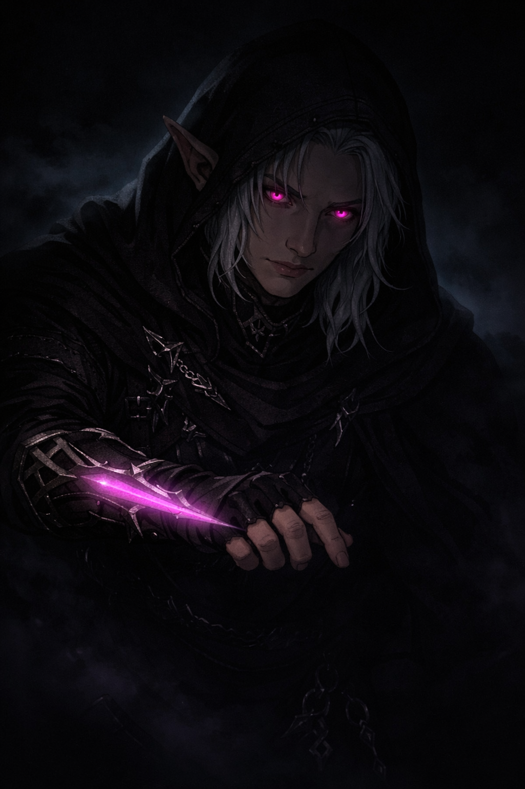

Aquele amaldiçoado com a curiosidade.
Vaelis nasceu em uma pequena comunidade élfica escondida nas profundezas de uma floresta antiga. Entre seu povo, o tempo corria de maneira diferente do restante do mundo; as estações passavam tranquilamente, as gerações cresciam devagar e a vida era guiada por tradições antigas que mantinham a harmonia entre os elfos e a natureza. Durante seus primeiros anos, Vaelis viveu como qualquer outra criança da vila. Corria entre as árvores altas, observava os animais da floresta e escutava as histórias dos anciões ao redor das fogueiras noturnas. Nada parecia fora do comum em sua infância.
Por volta de seus dez ou doze anos, porém, algo começou a mudar em seu comportamento. Enquanto outras crianças demonstravam interesse em aprender a caçar ou a manejar o arco, Vaelis se sentia atraído por outra coisa. Perguntas surgiam em sua mente com frequência, curiosidades que pareciam surgir sem motivo aparente. Ele observava qualquer forma de escrita que encontrasse: símbolos gravados em pedras antigas, marcas em árvores, pequenos registros deixados por viajantes que por vezes cruzavam a floresta. Era como se sua mente estivesse procurando algo, mesmo sem saber exatamente o quê.
Foi durante um de seus passeios solitários pela floresta que sua vida mudou pela primeira vez. Caminhando por uma trilha que já percorrera inúmeras vezes, o chão subitamente cedeu sob seus pés. A terra se rompeu e Vaelis caiu por um buraco oculto, rolando por terra solta e pedras até parar no fundo de uma câmara subterrânea. O lugar parecia antigo, silencioso de uma maneira quase inquietante, como se estivesse esquecido pelo mundo havia séculos. No centro da câmara havia duas grandes tabuletas de pedra posicionadas em lados opostos da sala, ambas cobertas por símbolos que Vaelis nunca havia visto antes.
Mesmo sendo apenas uma criança, ele percebeu algo estranho quase imediatamente: as duas inscrições não pertenciam ao mesmo idioma. Uma delas possuía formas rígidas e precisas, linhas retas e símbolos geométricos que pareciam gravados com exatidão quase perfeita. A outra, porém, parecia diferente, seus símbolos eram curvos, complexos e estranhamente orgânicos, como se possuíssem algum tipo de movimento próprio quando observados por muito tempo. Impulsionado por uma curiosidade que não conseguia explicar, Vaelis se aproximou para observá-las melhor. Por um breve instante, algo aconteceu dentro de sua mente. Não foi como aprender um idioma, nem como decifrar um enigma. Foi mais parecido com lembrar algo que sempre estivera ali. Durante aquele momento fugaz, os símbolos fizeram sentido. Ele compreendeu as inscrições como se sempre tivesse sabido o que significavam. E então tudo desapareceu.
Quando voltou a si, Vaelis estava novamente na trilha da floresta, alguns passos antes do ponto onde lembrava ter caído. Confuso, voltou ao local onde acreditava que o buraco deveria estar, mas não encontrou absolutamente nada. O chão estava intacto, sem qualquer sinal de terra quebrada ou passagem subterrânea. A trilha parecia exatamente como sempre fora.
Vaelis nunca contou a ninguém sobre o que aconteceu naquele dia. No entanto, algo havia mudado dentro dele. Ele sabia que havia lido aquelas tabuletas, mas sempre que tentava recordar os símbolos com clareza, as imagens se tornavam confusas em sua mente, como se as letras dançassem em seus pensamentos antes que pudesse compreendê-las novamente. Foi nesse momento que nasceu uma inquietação silenciosa dentro dele, uma busca que ainda não tinha nome, mas que jamais o abandonaria.
Durante os cem anos que se seguiram, Vaelis permaneceu em sua vila, vivendo aparentemente como qualquer outro elfo. Ele não demonstrava estranheza ou obsessão diante de seus parentes, mantendo para si o segredo daquilo que havia visto. Mesmo assim, algo dentro dele continuava procurando respostas. Livros, idiomas e registros antigos começaram a ocupar cada vez mais espaço em seus interesses. Com o passar das décadas, tornou-se evidente para ele que o conhecimento que buscava dificilmente seria encontrado em uma pequena comunidade escondida na floresta.
Quando finalmente decidiu partir, explicou a todos que desejava estudar o mundo além da floresta. Seus parentes aceitaram sua decisão sem questionamentos, pois a curiosidade sempre fora uma característica comum entre os elfos. Assim, Vaelis deixou sua terra natal e iniciou uma jornada que o levaria muito mais longe do que imaginava.
A jornada de Vaelis terminou em uma grande metrópole, um lugar onde estudiosos, comerciantes e viajantes de inúmeras terras diferentes se encontravam diariamente. Para alguém movido pela busca de conhecimento, aquele era o ambiente perfeito; Ali, Vaelis mergulhou completamente nos estudos; Aprendeu novos idiomas, trabalhou como tradutor e copista, auxiliou pesquisadores em seus trabalhos e passou anos frequentando bibliotecas e círculos acadêmicos.
Com o tempo, seu talento para compreender sistemas linguísticos complexos começou a chamar atenção. Seu nome tornou-se conhecido entre estudiosos da cidade, não como uma grande autoridade, mas como alguém respeitado por sua mente analítica e sua habilidade incomum para interpretar idiomas raros ou fragmentados. Ainda assim, as respostas que procurava continuavam fora de alcance.
Com o tempo, seu talento para compreender sistemas linguísticos complexos começou a chamar atenção. Seu nome tornou-se conhecido entre estudiosos da cidade, não como uma grande autoridade, mas como alguém respeitado por sua mente analítica e sua habilidade incomum para interpretar idiomas raros ou fragmentados. Ainda assim, as respostas que procurava continuavam fora de alcance.
Foi durante um encontro entre pesquisadores que algo finalmente mudou. Enquanto conversava com outros convidados, Vaelis ouviu acidentalmente uma conversa sobre certos documentos raros pertencentes a uma coleção privada. Segundo os estudiosos que comentavam sobre eles, aqueles textos apresentavam uma estrutura linguística incomum, com características que lembravam tanto idiomas celestiais quanto infernais, mas sem pertencer completamente a nenhum dos dois. Algo despertou imediatamente na mente de Vaelis.
Durante meses ele tentou obter acesso aos documentos por meios legítimos. Enviou pedidos formais, tentou negociar, procurou intermediários que pudessem convencê-los a permitir sua análise. Todas as tentativas foram recusadas. Os registros pertenciam a um colecionador extremamente reservado, alguém que raramente permitia que outros estudiosos examinassem sua coleção. Foi então que Vaelis tomou uma decisão. Se o conhecimento estava sendo escondido dele, ele o tomaria.
O roubo foi planejado com paciência e precisão. Quando finalmente conseguiu acessar os registros, percebeu imediatamente que estava diante de algo extremamente importante. Os símbolos presentes nos documentos possuíam semelhanças claras com aquilo que ele lembrava vagamente das tabuletas da cripta. No entanto, também percebeu algo frustrante: os textos estavam incompletos. Eram apenas fragmentos de algo maior.
Enquanto examinava os documentos, o dono da coleção apareceu. O confronto foi breve. Uma pressão intensa surgiu na mente de Vaelis, como se algo dentro dele estivesse despertando pela primeira vez. Uma lâmina formada puramente de energia psíquica manifestou-se em sua mão quase instintivamente. O ataque foi rápido e silencioso. Quando percebeu o que havia feito, o homem já estava morto no chão, sem ferimentos aparentes, como se sua vida tivesse simplesmente se apagado.
Aquela noite marcou duas mudanças profundas na vida de Vaelis: seu primeiro assassinato… e o despertar de seus poderes psíquicos. Nos anos seguintes, sua busca pelos fragmentos daquela linguagem misteriosa se tornou cada vez mais intensa. Sempre que descobria que alguém possuía textos relacionados àquele sistema de escrita, tentava obter acesso primeiro por meios legítimos. Quando isso falhava, recorria ao roubo. E quando o roubo dava errado… sua mente resolvia o problema.
Entre quinze e vinte estudiosos e colecionadores morreram ao longo dos anos seguintes. Oficialmente, todas as mortes pareciam naturais: ataques cardíacos, colapsos inexplicáveis, acidentes súbitos. Mesmo assim, rumores começaram a circular entre os círculos acadêmicos da cidade. Muitos passaram a acreditar que alguém estava eliminando aqueles que possuíam certos tipos de conhecimento. Um nome começou a surgir nas conversas sussurradas entre estudiosos.
Undyne.
Uma figura misteriosa, um assassino invisível que parecia atacar sem deixar vestígios. Apenas uma pessoa sobreviveu tempo suficiente para dizer algo sobre o agressor. Antes de morrer, apontou para um corredor mergulhado em escuridão e murmurou, com a voz fraca e tremendo entre o medo e a incredulidade: “Eu vi… na escuridão… os olhos dele… rosados… brilhando… como se a própria mente estivesse queimando.” A história se espalhou rapidamente, alimentando ainda mais a lenda.
Vaelis, porém, nunca se importou com isso. Para ele, aquelas mortes não eram assassinatos no sentido moral da palavra. Eram apenas obstáculos removidos de um caminho maior. Algumas vidas, afinal, não significavam nada quando comparadas ao valor do conhecimento que ele buscava
Décadas de estudo permitiram que Vaelis reconstruísse grande parte da linguagem misteriosa que havia encontrado pela primeira vez quando ainda era uma criança. Ele comparou fragmentos, analisou padrões e dedicou incontáveis horas a traduzir os símbolos que havia reunido ao longo dos anos. Mesmo assim, algumas lacunas permaneciam. E todas pareciam apontar para o mesmo lugar. Um nome aparecia repetidamente nas interpretações possíveis dos fragmentos. Baróvia.
Uma terra distante, cercada por névoas densas e histórias sombrias, aparentemente isolada do restante do mundo. Segundo suas análises, havia uma grande possibilidade de que outros fragmentos daquela linguagem estivessem concentrados naquele lugar. Depois de quase três séculos de busca, Vaelis tomou sua decisão. Ele deixaria a metrópole para trás. Não houve despedidas nem explicações. Reuniu seus registros, levou apenas o necessário para continuar sua pesquisa e partiu silenciosamente pela estrada. Atrás dele, rumores sobre Undyne continuavam a circular entre estudiosos e colecionadores, cada vez mais distorcidos pelas histórias que surgiam.
Mas para Vaelis, aquilo não importava. Tudo o que realmente importava era descobrir a verdade por trás das duas tabuletas que havia encontrado quando ainda era uma criança perdida em uma floresta. Se as respostas realmente estavam em Baróvia… Ele as encontraria. Custasse o que custasse.

O lugar onde tudo se iniciou... ou acabou.

O conhecimento o elevou ao patamar necessário de sua busca.

Quando tudo pareceu o fim... um novo caminho.

Nem toda escolha pode ser desfeita.

Perto de desvendar o mistério de sua vida, ele o fará não importe o custo.